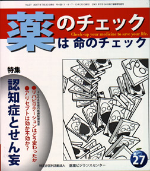

No.27 特集 認知症とせん妄 2007年7月 発行
高齢になると体全体の老化とともに脳の働きが落ちてくる。
物忘れがひどくなるだけでなく、今自分がいる場所が分からない、見えないものが見える、物がないのは誰かが隠したからだと言い張るようになる。
それが病気のせいだと周囲の人が理解できればよいが、理解されない場合にはいさかいの元になる。
こうした状態に徐々に進行していくのが、いわゆる「認知症」です。
以前は「痴呆症」と呼ばれていましたが、2004年から「認知症」と改められました（注）。
一方、「せん妄」にも認知の障害があり、認知症とよく間違われます。
高齢者の増加とともに、今後はますます、認知症を抱えて長生きする人が増えてくる可能性があります。
本号では、認知症とせん妄の違いや薬剤の影響について徹底的に考えてみたいと思います。
注：行政上の改名であり、医学用語としては「痴呆症」がまだ使われている。
もくじ
特集
■Q&A 認知症とせん妄は違う ―編集部
■看取りが最高のくすり ―春本幸子
・長谷川式簡易知能評価スケール
■認知症のタイプ ―編集部
■認知症の危険因子と予防 ―編集部
■認知症と言われたら、アリセプトを処方されたら ―編集部
■認知症に有効な治療薬剤はない ―浜 六郎
・リスト１：せん妄の原因となる薬剤とその対処方法
・リスト２：認知症治療薬剤の評価
■関連記事：アリセプトの海外における評価 ―寺岡章雄
提言
■NPOJIPの提言･･･タミフル
厚労省よ！因果関係を認めるのはできるだけ早いほうがよい ―浜 六郎
短期連載
■2006年度の医療制度改革
リハビリテーションはどう変わったか ―春本幸子
連載
■身近な薬の副作用（３）
入院後のせん妄
■映画のなかのクスリ（２０） L−ドーパ ―木元康介
■みんなのやさしい生命倫理 ２７
EBMの生命倫理（６）―谷田 憲俊
■リレーエッセー 「村嶋歸之への想い」 ―木村和世
■市民の視点（１１）
情報公開の意義は「中身の議論」 ―勝村久司
その他
■アクトス 続報１ アクトスは糖尿病患者の脳卒中を減らす？？
続報２ FDAがアクトスに黒枠警告を要求
■海外の情報
■行ってきました
PSA検診 パンフレットは問題だらけ！
■コーヒー無礼区
■質問箱 １ 心房細動があっても降圧剤を止めてよいか？
２ 降圧剤を止めたいと主治医に告白するタイミングは？
■読者の声
■書評
『人生を変えた内部告発』／『検証 C型肝炎―薬害を放置した国の大罪』
■イベント情報
■編集メンバー紹介
■用語の解説
■編集後記
短期連載 2006年度の医療制度改革（１） より
リハビリテーションはどう変わったか 春本幸子
2006年度は医療関係の法律や制度が、大きく、しかもたくさん変えられた年でした。
特に高年者の負担増は大きく、所得税、住民税、国民健康保険料・介護保険料が一気にはね上がりました。
そして医療制度も大きく変わりました。今回から３回にわたって、2006年度の医療制度改革で何がどのように変わったのかを見ていきます。
第１回はリハビリテーションの制限について。今後、28号は「検診と予防」、29号は「医療費について」、を予定しています。
（執筆者は各号交代します）
（以下、引用省略）
詳しくは本誌で。